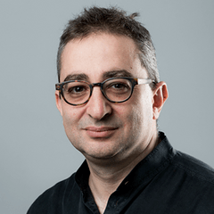
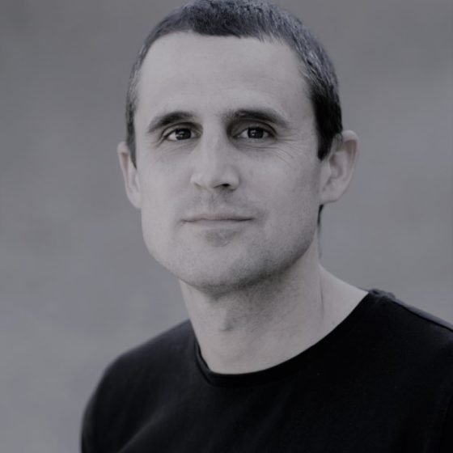
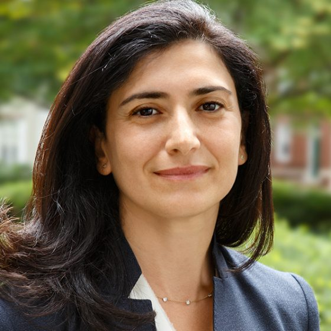
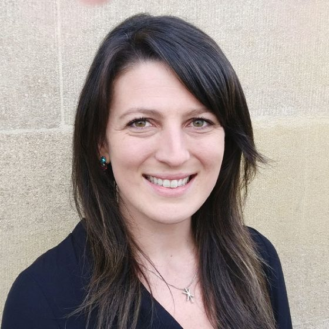
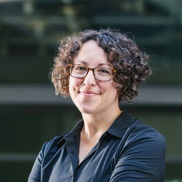
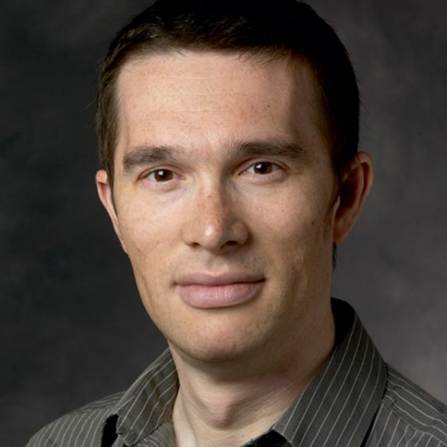
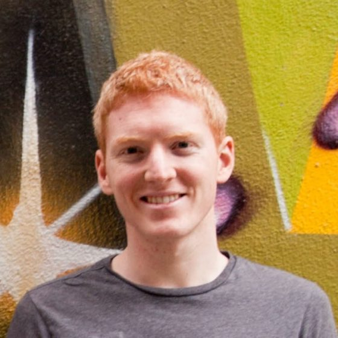
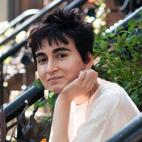

Pierre Azoulay
MIT SLOAN
Pierre Azoulay is the International Programs Professor of Management at the MIT Sloan School of Management.
HomePage
Pierre Azoulay is the International Programs Professor of Management at the MIT Sloan School of Management.
HomePage
Paul Niehaus is an Associate Professor of Economics at UC San Diego and the co-founder and current director at GiveDirectly.
HomePage
Raffaella Sadun is Charles Edward Wilson Professor of Business Administration at Harvard Business School.
HomePage
Daniela is an Associate Professor in the Department of Economics at Monash University.
HomePage
Heidi Williams is a Professor of Economics at Dartmouth College. She is the Director of Science Policy at the Institute for Progress.
HomePage
John Van Reenen is the Ronald Coase School Professor at the London School of Economics.
HomePage
Patrick Collison is the co-founder and CEO of Stripe.
HomePageCaleb Watney is the co-founder and co-CEO of the Institute For Progress.
HomePageMatt Clancy is a research fellow at Open Philanthropy and is a senior innovation economist at the Institute for Progress.
HomePage
Ulkar is a Research Associate working on economics of science and innovation at Dartmouth.
HomePageOlivia is the project manager of the data collection effort for SLMP. She has been a World Management Survey trainer and manager for almost a decade.
HomePageMarcos is a project manager for the data collection effort for SLMP. He has been a World Management Survey trainer and manager for almost a decade.
HomePageLuiza is a predoctoral researcher at the Dyson School of Applied Economics and Management at Cornell University.
Samay is a predoctoral researcher at the Harvard Business School.
Orli is a junior research assistant.
Angelique is a junior research assistant.
Daniel is a junior research assistant.